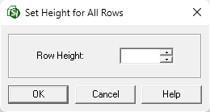
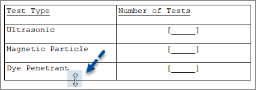

This command can also be executed from the SI Editor's Table's Right-click menu.
The Row Height command provides the ability to specify the height of rows within Formatted Tables.

 In the event of an error, click outside the table and use the Undo (Ctrl+Z) command. To learn more, see the Table Tips and Tricks topic.
In the event of an error, click outside the table and use the Undo (Ctrl+Z) command. To learn more, see the Table Tips and Tricks topic.
 The OK button will execute and save the selections made.
The OK button will execute and save the selections made.
 The Cancel button will close the window without recording any selections or changes entered.
The Cancel button will close the window without recording any selections or changes entered.
 The Help button will open the Help Topic for this window.
The Help button will open the Help Topic for this window.
 When adjusting rows using the mouse, it is recommended that you start adjusting the rows from the bottom of the Formatted Table to the top.
When adjusting rows using the mouse, it is recommended that you start adjusting the rows from the bottom of the Formatted Table to the top.

 Watch the Formatted Tables eLearning module within Chapter 3 - Getting Started.
Watch the Formatted Tables eLearning module within Chapter 3 - Getting Started.
Users are encouraged to visit the SpecsIntact Website's Support & Help Center for access to all of our User Tools, including Web-Based Help (containing Troubleshooting, Frequently Asked Questions (FAQs), Technical Notes, and Known Problems), eLearning Modules (video tutorials), and printable Guides.
| CONTACT US: | ||
| 256.895.5505 | ||
| SpecsIntact@usace.army.mil | ||
| SpecsIntact.wbdg.org | ||